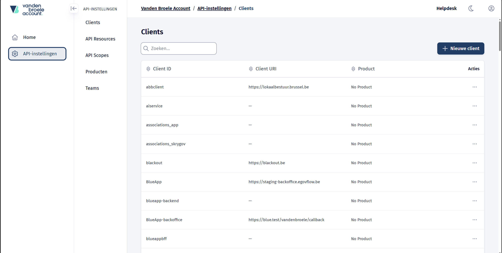
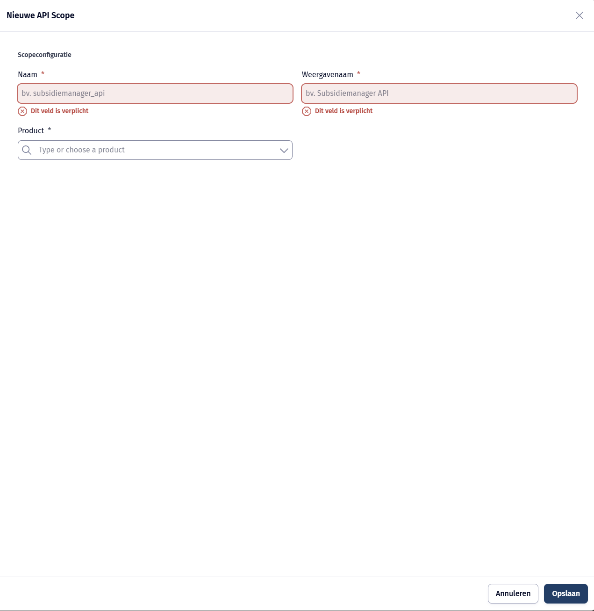
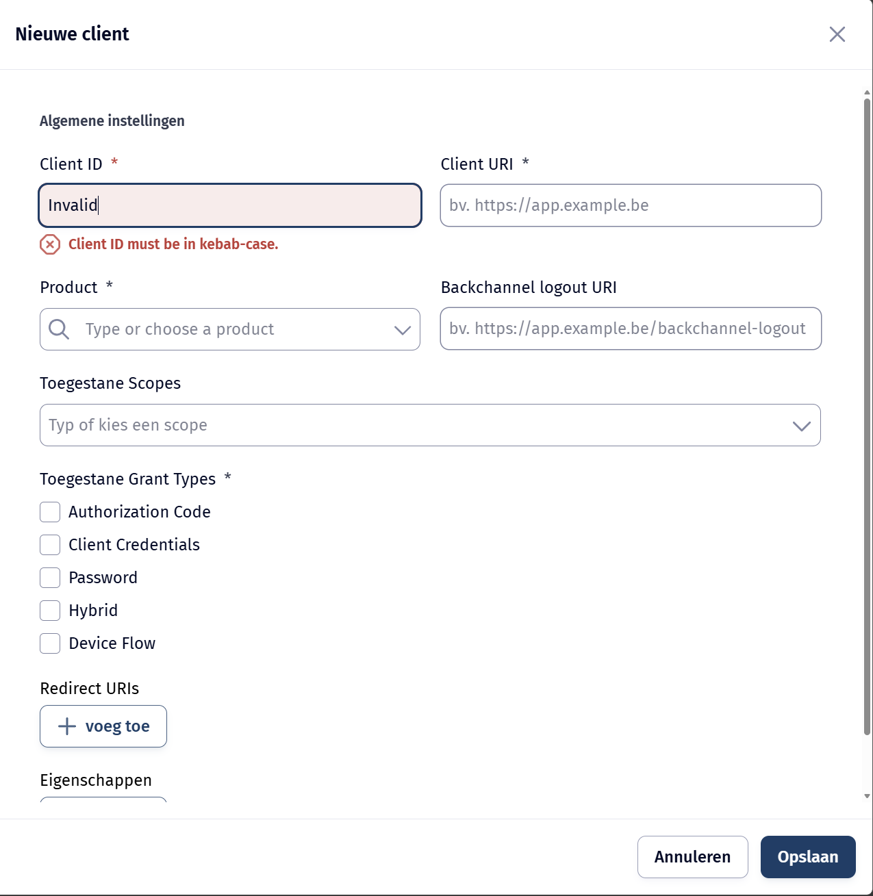

Stageproject – Team Helix (Vanden Broele)
Tijdens mijn stage bij Vanden Broele ontwikkelde ik een nieuwe Minimal API (V2) naast een bestaande V1 API voor Team Helix. Ik was verantwoordelijk voor de volledige ontwikkeling van de API, waarbij ik functionaliteiten implementeerde zoals caching, CQRS (Command Query Responsibility Segregation) met commands, queries en handlers, unit tests en REST-endpoints. Dit project gaf me waardevolle praktijkervaring met moderne backend- ontwikkeling, clean architecture, schaalbaar API-ontwerp en het schrijven van onderhoudbare code.
Screenshots



Wat ik heb gebouwd
Ik ontwikkelde de tweede versie van een bestaande API met ASP.NET Core Minimal APIs. De API volgde het CQRS-patroon en omvatte caching, validatie, unit tests en een duidelijke scheiding van verantwoordelijkheden. Naast backend-ontwikkeling werkte ik ook aan de Vue 3-frontend, waarbij ik de API integreerde met Refit en werkte met het eigen designsysteem van het bedrijf.
Wat ik heb geleerd
- Het CQRS-patroon toepassen met commands, queries en handlers
- ASP.NET Core Minimal APIs bouwen en testen
- Caching-strategieën implementeren
- Unit tests schrijven met xUnit
- Werken met Docker tijdens de ontwikkeling
- IdentityServer4 gebruiken voor authenticatie
- De Backend for Frontend (BFF) architectuur begrijpen
- API's consumeren met Refit
- Vue 3-applicaties ontwikkelen met TypeScript, Pinia en Vue Router
- Werken in een Agile ontwikkelteam
Technische stack
- Backend: ASP.NET Core Minimal APIs, C#, CQRS
- Frontend: Vue 3, TypeScript, Pinia, Vue Router
- Authenticatie: IdentityServer4
- Architectuur: Backend for Frontend (BFF)
- Communicatie: Refit
- Testen: xUnit
- Tools: Docker, Git, Azure DevOps, Visual Studio